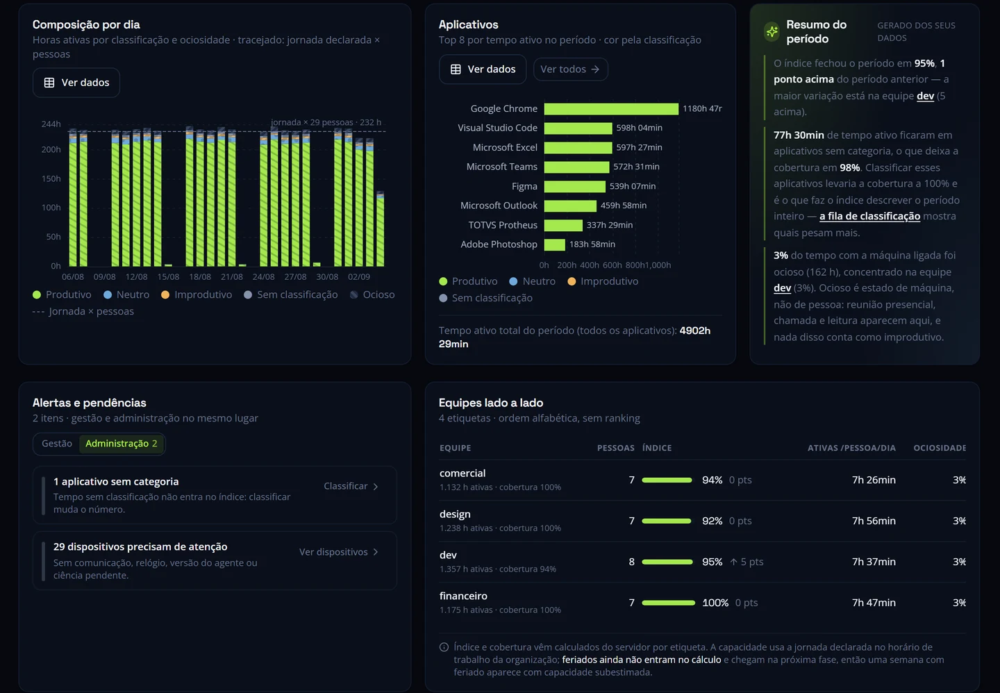
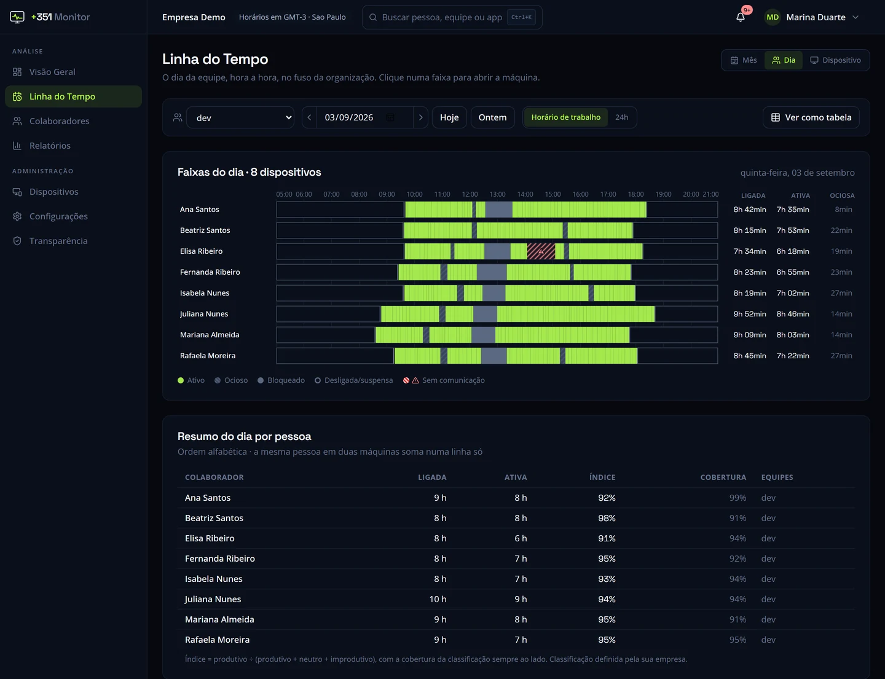
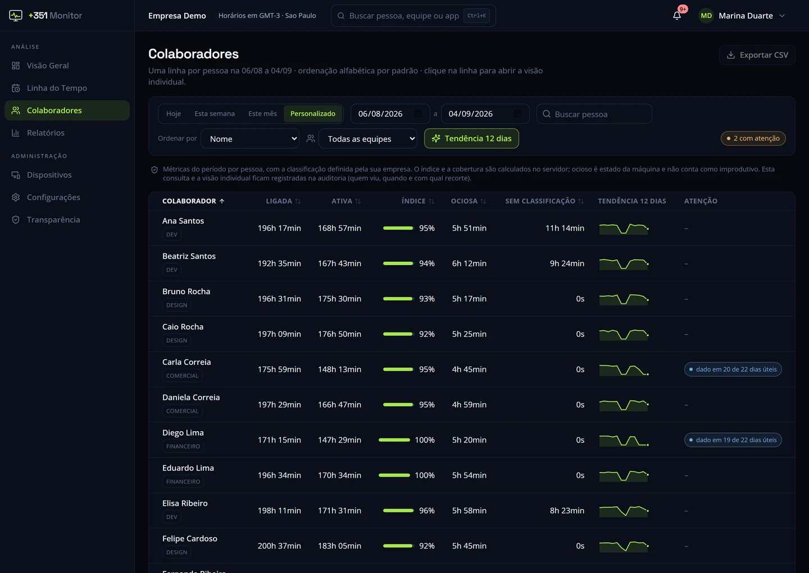

Tempo ativo
Visualize quanto tempo houve atividade no dispositivo durante a jornada.
Software de monitoramento de produtividade
Entenda como o tempo de trabalho é utilizado ao longo da jornada e transforme a atividade nos dispositivos corporativos em informações para decisões de gestão.
A +351 Monitor acompanha indicadores de atividade, ociosidade, aplicativos e jornada — sem captura de tela, sem keylogger e sem acesso ao conteúdo produzido pelo colaborador.

Monitoramento transparente
Empresas precisam entender como sua capacidade operacional está sendo utilizada. Mas isso não exige acompanhar cada movimento do colaborador.
A +351 Monitor transforma dados de utilização dos dispositivos corporativos em indicadores que ajudam gestores a compreender padrões de atividade, utilização de ferramentas e distribuição do tempo ao longo da jornada.
O objetivo é oferecer visibilidade para gestão, e não acesso ao conteúdo do trabalho.
Nosso princípio
Dados para entender a operação. Privacidade para respeitar as pessoas.
Funcionalidades
Indicadores objetivos para o monitoramento de produtividade de funcionários, organizados da forma como a gestão precisa ler: por período, por equipe e por colaborador.
Visualize quanto tempo houve atividade no dispositivo durante a jornada.
Identifique períodos sem interação com teclado e mouse e analise o contexto antes de qualquer conclusão.
Entenda quais sistemas e aplicações concentram o tempo das equipes.
Visualize padrões ao longo do expediente e períodos de utilização do dispositivo.
Analise dados consolidados ou individuais conforme os perfis de acesso definidos pela empresa.
Transforme dados operacionais em informações para apoiar decisões sobre processos, capacidade e eficiência.

Limites claros
Você não precisa ver a tela do colaborador para entender como a operação está funcionando.
Modelos de trabalho
A forma de trabalhar mudou. Equipes podem estar no escritório, em home office ou distribuídas entre diferentes localidades.
A +351 Monitor permite que a empresa tenha uma visão consistente sobre a utilização dos dispositivos corporativos independentemente de onde o trabalho esteja sendo realizado.
Indicadores de atividade, ociosidade e aplicativos das estações de trabalho do escritório, com a mesma leitura para todas as áreas.
Os mesmos critérios nos dias de escritório e nos dias remotos, para que a comparação ao longo do tempo continue coerente.
No monitoramento em home office, os indicadores vêm do próprio dispositivo corporativo, os mesmos usados no escritório. Uma forma direta de fazer o monitoramento de equipes remotas sem mudar a régua.
Como funciona
Agente leve instalado nos dispositivos corporativos.
A atividade é transformada automaticamente em registros estruturados.
Gestores visualizam atividade, ociosidade, aplicativos, jornada e indicadores.
Utilize os dados para identificar padrões, melhorar processos e apoiar decisões de gestão.

Classificação de aplicativos
A +351 Monitor não decide sozinha se uma atividade é produtiva ou improdutiva.
A própria empresa define como cada aplicativo deve ser classificado de acordo com sua realidade, área e função.
Um mesmo sistema pode ter finalidade diferente dependendo da equipe que o utiliza.
Segurança e LGPD
O monitoramento corporativo deve ter finalidade clara, transparência e critérios compatíveis com a utilização dos dados.
A +351 Monitor foi desenvolvida com uma abordagem de minimização: coleta indicadores necessários para gerar informações de produtividade sem utilizar captura de tela, keylogger, webcam ou microfone.
A empresa cliente define suas políticas internas e responsabilidades relativas ao tratamento dos dados.
Perguntas de gestão
Um bom controle de produtividade de funcionários começa por perguntas, não por suspeitas. Estas são algumas das que os dados ajudam a responder:
A plataforma fornece os dados. A decisão continua sendo humana.
Mais sobre produtividade de colaboradores e gestão com dados na nossa seção de conteúdos.
Perguntas frequentes
É uma solução que permite à empresa acompanhar indicadores relacionados à utilização dos dispositivos corporativos e à jornada de trabalho. A forma e a profundidade do monitoramento variam de acordo com cada plataforma.
Não. A +351 Monitor não realiza captura nem gravação de tela.
Não. A plataforma não registra teclas digitadas.
Sim. O agente acompanha os indicadores do dispositivo corporativo independentemente de o trabalho ocorrer presencialmente ou remotamente.
Sim. A plataforma registra informações sobre os aplicativos utilizados e o tempo associado à utilização.
A própria empresa. A classificação pode variar conforme área, função e contexto.
Não. A +351 Monitor não lê o conteúdo de mensagens, e-mails ou documentos.
A resposta depende de cada caso. O uso de uma ferramenta de monitoramento deve ser avaliado considerando a finalidade do tratamento, a necessidade dos dados coletados, a transparência com os colaboradores, a segurança da informação, as políticas internas da empresa e os demais requisitos aplicáveis à relação concreta. Uma abordagem de minimização, sem captura de tela, keylogger, webcam ou microfone, facilita esse enquadramento, mas não substitui a análise da própria empresa. Aprofundamos o tema no artigo É legal monitorar o computador dos funcionários?
Veja como a +351 Monitor transforma a utilização dos dispositivos corporativos em informações para uma gestão mais eficiente.
Meça. Entenda. Decida.